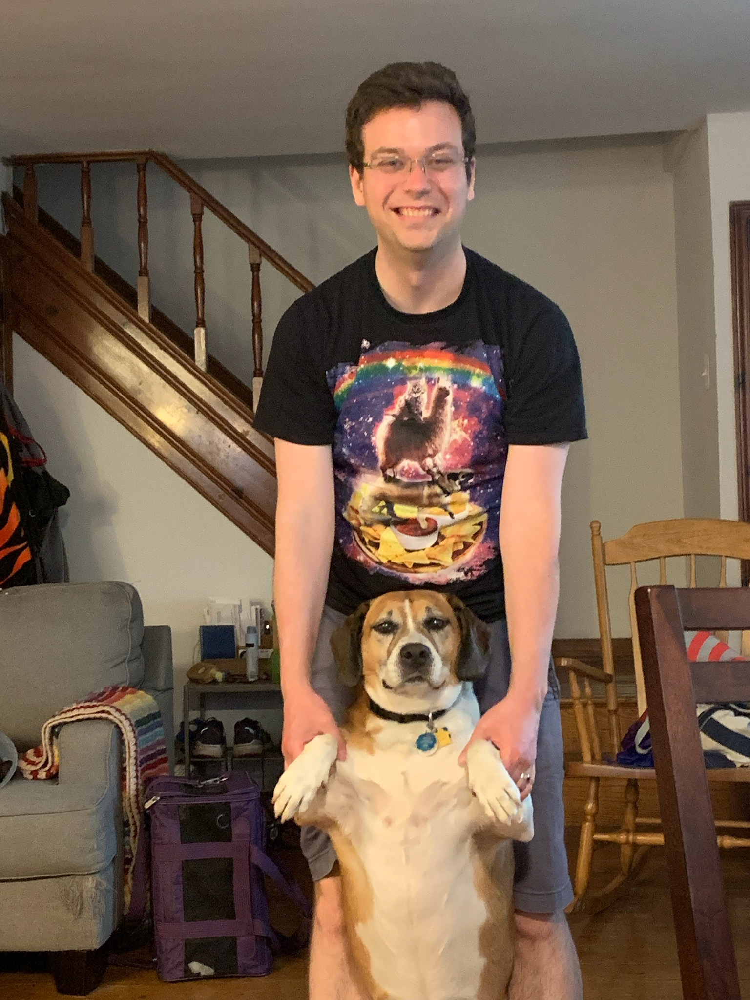

CS 271: Data Structures And Algorithms
Ursinus College, Fall 2022
Instructor: Christopher J. Tralie
A minimum spanning tree on a stipple pattern of Darth Vader, by Sean Sharo in CS 371 Spring 2022

All possible binary trees with 8 leaves, which can be counted with the Catalan number C7
Identifying plant cells efficiently with the help of union find

An example of the 2-opt heuristic used to create traveling salesperson art of a family of Emperor penguins.
First half of bitonic sort hardware. Picture courtesy of Wikipedia
Shortest paths from a point on a triangle mesh using a variant of Dijkstra's algorithm
Table Of Contents
Overview
Class Times / Locations
- Monday/Wednesday/Friday, 1:30-2:20PM in Pfahler 107
Student Office Hours
-
Monday/Wednesday 4PM - 5PM in Pfahler 107
-
Wednesday/Friday 10AM - 11AM in Pfahler 001 (Note the location change!)
-
Tuesday 12PM - 1PM virtually on Discord
Prerequisites/Requirements
Math 111 or equivalent, and a grade of C- or higher in CS 174
Instructor
I grew up right around the corner in the Montgomery County and attended Upper Dublin High school (class of 2007). I then did my undergraduate degree in Electrical Engineering at Princeton University and my master's and Ph.D. degrees in Electrical And Computer Engineering at Duke University (heavily studying math and CS along the way). I finally started my dream job at Ursinus College in Fall of 2019! You can read more about my interests on my professional web site. Looking forward to getting to know everyone as we work through this course together!
Lab T.A.: Matt Wallace
Matt Wallace is an Ursinus junior and a CS 271 veteran. He will be grading most of the labs in this class, and he will be at many of my office hours to help.
Course Description
The word algorithm is often used as a catch-all term for any "recipe," or sequence of steps, that a computer follows to solve a problem. Alternatively, an algorithm can be defined as an abstract computer program that takes an input and gives an output. For example, an algorithm to solve a Sudoku puzzle would take as input a Sudoko board and would output the numbers that go in the blanks.
Coming up with algorithms that are guaranteed to give correct outputs, or provably correct is already a difficult enough problem. Computers are very simple minded compared to humans, so we have to work hard to break down problems into very concrete steps that they can run. In this course, we will learn a few strategies to attack different classes of problems in this manner, and students will practice solving problems from scratch. But we will go even further by analyzing the efficiency of different algorithms using rigorous mathematical tools, such as Big-O Notation. We will also explore data structures (e.g. hash tables and ordered binary trees), as well good pairings between data structures and algorithms that lead to efficient, elegant implementations.
There are six units in the course, and each unit will culminate in an assignment that showcases one of the main algorithms or data structures in that unit. The assignments for each unit will be as follows:
- Automatic plant cell detection in images
- Word autocomplete from partially typed words
- Resizing images without blurring content
- Fair elections of favorite foods
- Construction of phylogenetic trees from DNA sequence data
- Traveling salesperson art
Students will implement algorithms in Python, since this language is very compact syntactially and very close the mathematical pseudocode we use to reason about algorithms in the abstract. But the language is secondary to reasoning about the algorithms themselves. Still, it gives us an opportunity to ensure that all Ursinus students leave with some Python knowledge.
NOTE: CS 271 used to be CS 371 before this semester. The content of the two is largely the same, but this version has more of a focus on implementations and less theory, and as such, it does not require discrete math as a prerequisite. Instead, students will get a crash course on some important math concepts (e.g. logs, factorials, triangle numbers) during the first week, and students will not have to do as many proofs on the assignments. The benefit of this change is that students can take this foundational topic earlier in their CS trajectory at Ursinus, making further courses like operating systems, databases, and artificial intelligence more accessible.
Learning Goals
- Develop a sense for algorithm efficiency and the synergy between algorithms and data structures.
- Learn how to incrementally design, implement, and test efficient algorithms to solve a problem.
Learning Objectives
- Implement data structures, such as queues, linked lists, hash tables, trees, and graphs, using object-oriented paradigms.
- Analyze the runtime and memory complexity of algorithms using rigorous mathematical foundations, including big-O notation, as well as the lesser-known big-gamma, big-theta, and little-o notations.
- Develop familiarity with common strategies for algorithm design, including divide and conquer, dynamic programming, and greedy approaches.
- Apply algorithms to various problems in the sciences and digital humanities.
- Practice patient problem solving by developing comfort with the edit -> compile -> run loop, along with intermediate debugging skills.
Technology Logistics
We will be using a zoo of technologies in the course, as has become standard in 21st century work environments. Below is a table summarizing what kinds of communications/activities occur via each technology, and below that there are more details on everything. This is admittedly complex, and it will take some getting used to, but it will be worth it once we get it nailed down.
NOTE: I will repeat the same announcements across e-mail and Discord, so you don't have to check all both for announcements.
| Class web site (You are here!) |
|
| Canvas |
|
| Discord |
|
| Microsoft Teams |
|
|
*: For privacy reasons, anything of a personal nature, and particularly things that have to with educational records (e.g. grades), need to be kept within Ursinus sanctioned platforms like Outlook e-mail and Microsoft Teams.
Canvas
We will be using Canvas, but only to submit assignments and to store all of the grades. I will also keep all of the due dates current on the calendar there, as students have appreciated this common space for all of their classes in the past.
Discord / Anonymous Questions
To facilitate informal, class-wide discussions about the class, as well as buddy group coding with screen sharing, we will have a Discord channel for the class. My goal is for this to turn into a flourishing area to work through confusion and to share ideas as a group.
Voltaire Anonymous Questions
All questions are welcome! To help break down the barrier of asking questions, we will be using the chat bot Voltaire so students can ask questions anonymously. This has worked very well in the past. To use Voltaire, send a direct message to the Voltaire bot with the following syntax:
where channel_name is the name of the channel you want to post to, and message is the text you want to send. Below is an example:
(Answer: N*(N-1)/2), which is related to the triangular numbers
In Class Anonymous Questions
In addition to Voltaire, I'll be running a bot during class that accepts questions to help quieter student who want to participate anonymously to do so. I've found this sort of thing to be particularly helpful with students from underrepresented groups. To ask a question during class, visit http://mathcs.ursinus.edu/question.
Other Rules
Do not send me direct messages or anything of a sensitive nature (e.g. grades) over Discord. Instead, use Microsoft Teams or e-mail for that, since those transactions are locked down better under Ursinus control.
Microsoft Teams
For one on one direct messages with me, we will be using Microsoft Teams, which is linked to your Office suite through Ursinus, so you are automatically enrolled.
Readings
The official textbook for this course is A First Course on Data Structures in Python by Don Sheehy, which is freely available online at this link. The author of the book has a very similar background to me (Princeton CS undergraduate, researcher in computational geometry and topology), so we have a similar set of topics we'd like to emphasize. Still, since we have covered some of the content in CS 174, we will go slightly beyond the book.
Deliverables
Labs
We will have labs implementing fundamental data structures from scratch, which will build up to larger assignments. Sometimes we will devote a whole class to these, and other times we will devote only part of a class to these.
Programming Assignments
The bulk of the grade in the course will be earned by completing 6 medium scale programming assignments, one for each unit, which will build on the data structures you create in the labs. Be sure to start them early, since debug time can often be unpredictable! Refer to the collaboration and sharing rules for these assignments.
Debugging Principles
If you're taking this course, then you've certainly had experience with debugging, but it is a skill you will still need to work on, so you should expect to hit some roadblocks. In fact, it is time consuming and difficult even for very experienced programmers. So do not be hard on yourself if your programs don't work the first time around (they rarely do, even if you've been programming for decades!).
I have had nearly 20 years of programming experience at this point, and I have learned the hard way what works and what doesn't. Here are my main debugging principles in a nutshell
- Leave yourself adequate time to work on the assignments, because the amount of time it takes to resolve issues can be unpredictable.
- Write small bits of code and test them right away. Don't write a wall of code and test it, only to find out that something doesn't work. By contrast, if you write bits at a time, you will know right away what code you wrote caused things to be wrong.
- Apply the scientific method: have in mind hypothesis for what might be wrong, design a quick experiment to test your hypothesis, draw conclusions, and repeat.
- Fail quickly. If you're working on a larger scale program that processes a lot of data, do not wait for several minutes for data to load every time you make a small change. Instead, come up with the minimum, simplest experiment you possibly can which will tell you whether your code is correct or not.
- Don't forget that you can write code to help you automate debugging. Otherwise, it's sometimes tedious to repeat the same steps over and over again as you're changing things.
- Know when to walk away. We often get stuck in loops wanting to resolve things, but then our logical thinking goes out the window and we start randomly trying different things. Even if you're up against the clock, it is often good to take a little break and come back again a little bit later.
Class Engagement / Pre-Class Work
It's easier to learn a difficult subject like data structures by going through a number of examples on each topic beyond the examples in the large assignments. Because of this, we will often do small programming exercises and experiments in class related to a topic that we're learning. At times, I may ask you to read over a description of an exercise or to read some notes about a new topic before class so we can go more deeply into the examples. I may also ask you to hand in something small related to the class exercises to make sure you were putting effort in during class. This will all make up a small part of your grade in the class.
Final Assessment
Students have some autonomy in the final assessment for the class. There are two options. Brief descriptions are below, but you should click here to read more in-depth information. Both options are designed to give students concrete help in their future job searches, either by strengthening interview skills or by contributing to their software portfolios.
Option 1: Mock Coding Interview
It is a very common practice in interviews for software engineering jobs for recruiters to administer a live coding module, in which applicants implement one of the algorithms we went over in this class in the context of some specific problem. I will administer a half hour coding interview in Python to students who choose to do this assessment, and anything in the course is fair game. This assessment should be of particular interest to students who want to go into software engineering industry. Click here to view more information.
Option 2: Geometric Algorithm Multimedia Expo
One of the areas that is "tangential" to my research is computational geometry, which is really CS 271 meets geometry. It studies algorithms that are useful in computer graphics, robotics, video game design, city planning, map making, and beyond. Every year there is a "multimedia expo" at the Symposium on Computational Geometry, which is the flagship computational geometry research conference, in which groups of people submit video sketches, presentations, or web apps demonstrating an algorithm. Students in this class who choose this option will do the same thing, and projects that are good enough will be submitted to the conference next year! Click here to read more about this option and to see some ideas I have of projects that could work for this class.
Schedule
Outlined below is the schedule for the course, including lecture topics and assignment due dates. All assignments are due at 11:59PM on the date specified. The specific dates of different topics are subject to change based on the pace at which we go through the course.
| Lecture | Lectures (click for notes) | Readings/Links | Assignments/Deliverables | |
Intro To Python, Abstract Data Types, And Complexity | ||||
| 1 | Mon 8/29/2022 | Course Intro, Exponential Functions, Subset Sum | ||
| Tue 8/30/2022 | Syllabus Quiz Due, Survey Due, Discord Post Due | |||
| 2 | Wed 8/31/2022 | Logs, Loops in python, |
| Python Module Parts 1-2 Due Due |
| 3 | Fri 9/2/2022 | Continue Lab 1, Python Classes And Objects, The ADT Concept, Set ADT |
| Python Module Parts 3-6 Due Due
Homework 1: Autocomplete Out |
| 4 | Mon 9/5/2022 | (Doubly) Linked Lists, Stack And Queue ADTs |
| Lab 1 Due |
| 5 | Wed 9/7/2022 | Begin Asymptotics: Big-O, Polynomial, Exponential, Factorial | Big-O Self Study Module Due Before Class | |
| 6 | Fri 9/9/2022 | Little o, Big Omega, Little Omega, Complexity Hierarchies | ||
| 7 | Mon 9/12/2022 | Disjoint Sets And Union Find | ||
| 8 | Wed 9/14/2022 | Lab 2: The Union Find Algorithm |
| Disjoint Set / Union Find Module Due Before Class |
| Thu 9/15/2022 | Homework 1 Due | |||
| 9 | Fri 9/16/2022 | The ArrayList ADT and Data Structure, Amortized Analysis | ||
| 10 | Mon 9/19/2022 | Hash Tables: The Ultimate Needle in A Haystack Data Structure | Lab 2 Due
Homework 2: Plant Cell Segmentation Out | |
Recursion And Dynamic Programming | ||||
| 11 | Wed 9/21/2022 | Union Find Recursive Solution, Lab 3: Towers of Hanoi | Recursion Module due before class | |
| 12 | Fri 9/23/2022 | String Edit Distance | Edit Distance Module due before class | |
| Sun 9/25/2022 | Stacks And Queues Module Due | |||
| 13 | Mon 9/26/2022 | Memoization, Dynamic Programming |
| Lab 3 Due |
| 14 | Wed 9/28/2022 | Backtracing, Longest Common Subsequence | Homework 3: Seam Carving Out | |
| Thu 9/29/2022 | Homework 2 Due | |||
| 15 | Fri 9/30/2022 | Lab 4: Making Change with Dynamic Programming |
| Homework 3 Dynamic Programming Rules Due |
| Sun 10/2/2022 | Longest Common Subsequence Module Due | |||
| 16 | Mon 10/3/2022 | Recursively Backtracing Multiple Solutions | ||
| 17 | Wed 10/5/2022 | Knapsack Problem | Lab 4 Due | |
Sorting, Selection, And Shuffling | ||||
| 18 | Fri 10/7/2022 | Sorting Basics: Permutations, Insertion Sort, Bubble Sort |
| |
| 19 | Mon 10/10/2022 | Lab 5: Merge Sort, Kendall Tau Examples | Homework 3 Due | |
| Tue 10/11/2022 | HW4: Fair Elections of Favorite Foods Out | |||
| 20 | Wed 10/12/2022 | Quick Sort, Stability of Sorts | ||
| Thu 10/13/2022 | Lab 5 Due | |||
| -- | Fri 10/14/2022 | Robyn Hannigan inauguration | No CS 271 Class. Enjoy the break! | |
| -- | Mon 10/17/2022 | Fall Break | No CS 271 Class. Enjoy the break! | |
| 21 | Wed 10/19/2022 | Ω(NlogN) Barrier for Comparison-Based Sorts, Counting Sort, Begin Radix Sort | Sorting Basics Module Due before class | |
| 22 | Fri 10/21/2022 | Finish Radix Sort, Fisher-Yates Shuffling | ||
| Sun 10/23/2022 | Radix Sort / Fisher Yates Module Due | |||
| 23 | Mon 10/24/2022 | Linear Time Selection | ||
| Tue 10/25/2022 | Trees Module due | |||
Tree Data Structures And Algorithms | ||||
| 24 | Wed 10/26/2022 | Binary Trees: Preorder/Inorder/Postorder, Drawing Binary Trees | Last day to drop courses with a "W" | |
| Thu 10/27/2022 | HW4 Due | |||
| 25 | Fri 10/28/2022 | Minimum Spanning Trees, Kruskal's Algorithm | HW5: Phylogenetic Trees out | |
| 26 | Mon 10/31/2022 | Binary search trees: Search, Addition |
| |
| 27 | Wed 11/2/2022 | Lab 6: Binary Search Tree Removal |
| |
| 28 | Fri 11/4/2022 | Single Linkage Clustering, Tries | ||
| 29 | Mon 11/7/2022 | Tree Rotations |
| Lab 6 Due |
| 30 | Wed 11/9/2022 | Lab 7: AVL Trees (Balanced Binary Search Trees) |
| |
| 31 | Fri 11/11/2022 | Priority Queues / Binary Heaps |
| |
| 32 | Mon 11/14/2022 | Continue Priority Queues | Lab 7 Due | |
Graph Data Structures And Algorithms | ||||
| 33 | Wed 11/16/2022 | Graph Data Structures | HW5 Due | |
| 34 | Fri 11/18/2022 | Breadth-First Search, Depth-First Search |
| |
| 35 | Mon 11/21/2022 | Euclidean Traveling Salesperson Problem |
| HW6: Traveling Salesperson Art Out |
| -- | Wed 11/23/2022 | Thanksgiving | No CS 271 Class. Enjoy the break! | |
| -- | Fri 11/25/2022 | Thanksgiving | No CS 271 Class. Enjoy the break! | |
| 36 | Mon 11/28/2022 | Dijkstra's Algorithm | ||
| 37 | Wed 11/30/2022 | Lab 8: Implementing Dijkstra's Algorithm | ||
| 38 | Fri 12/2/2022 | Bellman Ford, Floyd-Warshall | ||
| 39 | Mon 12/5/2022 | Directed Acyclic Graphics, Topological Sort | Lab 8 Due | |
| 40 | Wed 12/7/2022 | Bipartite Graphics, Maximum Matching | ||
| 41 | Fri 12/9/2022 | The Hungarian Algorithm | HW6 Due | |
Grading
Breakdown
| Class Engagement / Pre-Class Work | 15% |
| Programming Assignments | 50% |
| Labs | 20% |
| Final Project / Mock Coding Interview | 15% |
Deadlines
The purpose of deadlines is to keep students on track as they work through the course to avoid a snowball effect, and deadlines will be strictly enforced for this reason. This is a department wide departure from the unfettered flexibility we gave during the earlier stages of the pandemic. That said, if students have accommodations or if other life events come up, they should communicate with me at least 3 days in advance of any deadline to request an extension. In the absence of said communications, all assignments are due at 11:59PM EST on the date(s) stated on the schedule. Students can turn in those assignments past the deadlines, and the scores will be adjusted as follows:
- -5% for work submitted between 1 minute - 6 hours late
- -10% for work submitted up to 12 hours late
- -15% for work submitted up to 24 hours late
- -25% for work submitted up to 48 hours late
- -40% for work submitted up to 96 hours late
- -50% for work submitted more than 96 hours late
Letter Grades
Letter grades will be assigned on the scale below at the end of the course.
|
|
|
|
|
Classroom Environment
Inclusive Environment
Computer science is a field that has historically been and continues to be steeped in inequalities. We will do our best to put the topics we're working on into the appropriate historical context, and to address broader societal issues that are related to the code that we write. We will strive to do better in our course, with an honest look at where we have been in the field. To that end, my goal is to foster a environment in which students across all axes of diversity feel welcome and valued, both by me and by their peers. Axes of diversity include, but are not limited to, age, background, beliefs, race, ethnicity, gender/gender identity/gender expression (feel free to tell me in person or over e-mail which pronouns I should use), national origin, religious affiliation, and sexual orientation. Discrimination of any form will not be tolerated.
.Furthermore, I want all students to feel comfortable expressing their opinions or confusion at any point in the course, as long as they do so respectfully. As I will stress over and over, being confused is an important part of the process of learning computer science. Learning computer science and struggling to grow is not always comfortable, but I want it to feel safe. In other words, I will regularly keep you at the boundary of your comfort zone with challenging, real-world assignments, but I want you to feel comfortable with me and your peers and respected as a learner during the process.
{kind=link}
Finally, I am aware that, particularly during the pandemic, there are a variety of factors that may make it difficult to perform at your best level in class. At Ursinus, we are fortunate to have quite a mix of students from different backgrounds, many of whom need to work part time, and an increasing number of whom are commuters and have family obligations. If you find yourself having difficulty performing at the level that you want and/or turning assignments in on time because of any of these issues, communicate with me, and we can come up with a solution together (I will gently reach out if I notice any slips even if you don't communicate). This is a foundational course for the CS major, and I want to work to keep your excitement alive, regardless of your personal circumstances. You belong in CS!
Participation
Classroom Attendance And Etiquette
Students are expected to attend class in person. We're shooting for engagement over mere attendance; students are expected to be active in class exercises and to be fully invested in the class (i.e. no internet browsing). Students who are unable to attend class for significant reasons (whether isolation or quarantine for students who have received a positive test, those experiencing Covid-related symptoms while awaiting test results, or other issues that make it difficult to attend class) should work pro-actively to make up any class exercises that they missed. To help with this, I will do my best to put up Youtube videos from other instructors on topics that we cover.
Finally, students are expected to follow any college policy requiring mask wearing on campus, in addition to following any guidance faculty provide for their individual classes.Masks should be available in every academic building, if needed.
Maximizing Your Communal Experience
Here are ways students can maximize their experience as a class community, and which could lead to extra credit in certain situations.
- Helping to teach a student a topic during office hours.
- Certain calls for participation in class
- Particularly helpful or insightful messages on Discord
- Finding mistakes in the book or on the assigned homework
Discord Communication Policy
Since this is a class-wide communication, the following rules apply to online communication- Students are expected to be respectful and mindful of the classroom environment and inclusivity standards. They are equally applicable to a virtual environment as they are in class.
- Students are not permitted to publicly share direct answers or questions which might completely give away answers to any homework problems. When in doubt, send me a direct message on Microsoft Teams.
- I will attempt to answer questions real time during my student office hours. Otherwise, I will make every attempt to respond within 24 hours on weekdays. I cannot be expected to respond at all on Saturdays or Sundays or outside of 10AM-8PM on weekdays, so plan accordingly. (Of course, students can and should still respond to each other outside of these intervals, when appropriate).
The points above are part of a more general term referred to as "netiquette." Refer to the chart below, provided by Touro College

Collaboration Policy
Overall Philosophy
The collaboration policy for this class walks the line between encouraging openness and collaboration during a challenging learning process, while also making sure that each students is progressing technically at an individual level without relying on 100% on other classmates. Communication between students is allowed (and encouraged!) on most assignments, but it is expected that every student's code or writeups will be completely distinct. Do not copy code off of the Internet. Do cite any sources in addition to materials linked from the course website that you used to help in crafting your code and completing the assignment.
Assignment Buddies
To encourage collaboration, students will be allowed (not required) to choose one or more "buddies" to work "near" during assignments and labs. Students are still expected to submit their own solutions, but they are allowed to provide substantial help to each other, and even to look at each others' code during the process. Students should indicate their buddies in the README upon assignment submission. Let me know if you would like a buddy but are having trouble finding one.
For the labs, collaboration rules are slightly more permissive beyond buddies. See the collaboration grid below.
Individual Assignments
There will be a few assignments that students are expected to complete on their own with no communication with anyone but me. They will be limited in number, but this will be just to make sure every individual students is progressing technically. You can think of them like an open-ended, open-book take-home quiz where you can ask me questions.
Collaboration Scenarios Table
Below is a table spelling out in more detail when and how you are allowed to share code with people (table style cribbed from Princeton CS 126).
Click on each button below to view the collaboration parameters for each scenario. Labs are more permissive than assignments, which are more permissive than individual tasks
Lab Collaboration Grid
| YOUR BUDDY |
COURSE STAFF |
CS 271/371 GRADS |
CLASS- MATES |
OTHER PEOPLE |
|
|---|---|---|---|---|---|
| DISCUSS CONCEPTS WITH: | ✔ | ✔ | ✔ | ✔ | ✔ |
| ACKNOWLEDGE COLLABORATION WITH: | ✔ | ✔ | ✔ | ✔ | ✔ |
| EXPOSE YOUR CODE/SOLUTIONS TO: | ✔ | ✔ | ✔ | ✔ | ✘ |
| VIEW THE CODE/SOLUTIONS OF: | ✔ | * | ✘ | ✔ | ✘ |
| COPY CODE/SOLUTIONS FROM: | ✘ | * | ✘ | ✘ | ✘ |
Assignment Collaboration Grid
| YOUR BUDDY |
COURSE STAFF |
CS 271/371 GRADS |
CLASS- MATES |
OTHER PEOPLE |
|
|---|---|---|---|---|---|
| DISCUSS CONCEPTS WITH: | ✔ | ✔ | ✔ | ✔ | ✔ |
| ACKNOWLEDGE COLLABORATION WITH: | ✔ | ✔ | ✔ | ✔ | ✔ |
| EXPOSE YOUR CODE/SOLUTIONS TO: | ✔ | ✔ | ✔ | ✘ | ✘ |
| VIEW THE CODE/SOLUTIONS OF: | ✔ | * | ✘ | ✘ | ✘ |
| COPY CODE/SOLUTIONS FROM: | ✘ | * | ✘ | ✘ | ✘ |
Individual Collaboration Grid
| YOUR BUDDY |
COURSE STAFF |
CS 271/371 GRADS |
CLASS- MATES |
OTHER PEOPLE |
|
|---|---|---|---|---|---|
| DISCUSS CONCEPTS WITH: | N/A | ✔ | ✘ | ✘ | ✘ |
| ACKNOWLEDGE COLLABORATION WITH: | N/A | ✔ | ✘ | ✘ | ✘ |
| EXPOSE YOUR CODE/SOLUTIONS TO: | N/A | ✔ | ✘ | ✘ | ✘ |
| VIEW THE CODE/SOLUTIONS OF: | N/A | * | ✘ | ✘ | ✘ |
| COPY CODE/SOLUTIONS FROM: | N/A | * | ✘ | ✘ | ✘ |
* You may view and copy code from class exercises and class resources without citing them, but you should not copy solutions from previous semesters that the instructor may have provided
NOTE: The terms "exposing" and "viewing" exclude sending or ingesting electronically, which would be considered copying. Exposing and viewing are normally done in the context of in-person working or in the help room. Since we are working remotely, what this means is that buddies can screen share as they are working through things, but they should not send code directly.
NOTE ALSO: "Other people" includes internet sources.
If the collaboration policy has been violated in any way, regardless of intent, then it may be an academic dishonesty case, and it will be referred to the Associate Dean for Academic Affairs. I am required to make this report in every occurrence, so it is best to speak with me first if there are any questions about the policy or expectations. You should feel free to have these conversations with me anytime prior to making your submission without fear of penalty.
On a more personal note, though a willful violation of academic honesty may seem merely transactional to a student, faculty take violations very personally, as they are disrespectful to the time and effort we put into our courses. I would also like to emphasize that your reputation is much more important than your grades. The recommendations we as faculty write go a long way, and we are much happier to write positive recommendations for students with lower grades who show grit and growth than we are to write recommendations for students with higher grades who have cheated.
Other Resources / Policies
Accommodations
In addition to our general awareness diversity, Ursinus College is also committed to providing reasonable accommodations to students with disabilities. Students with a disability should contact the Directory of Disability Services ASAP. Dee Singley is located in the Center for Academic Support in the lower level of Myrin Library. Visit this link for more information on the process. I will do my best to accommodate your requests, and they will be kept completely confidential.
One on One Tutoring
One on one tutoring for up to two hours per week is available through the institute for student success. Please click here to fill out a Qualtrics survey if you'd like to take advantage of this.
Let's Talk
Mental health care is increasingly recognized as a crucial service for the undergraduate population. Please visit this link for more information about complementary counseling services provided by the college. The Wellness Center has a virtual drop-in crisis hour at 2-3 pm each weekday, which is available for students in crisis who need to be seen immediately by a clinician. If you are still hesitant to go, take me (Professor Tralie) as an example of someone who has benefited greatly from talk therapy in the past. I am happy to discuss this in office hours in more detail.
Beyond that, please have a look at this document for a variety of resources related to mental health at Ursinus.
Finally, be aware that there are resources outside of mental health care proper to address some core sources of mental stress and strain, such as time management and writing at the Institute for Student Success and the Center for Writing And Speaking.
Title IX
Title IX is a federal law, under which it is prohibited to discriminate on the basis of gender. The Title IX Coordinator is available to receive inquiries and to investigate allegations in this regard.
Inclement Weather Policy
In the event that the College closes due to inclement weather or other circumstances, our in-person class sessions, drop-in office hours, or other meetings will not be held. I will contact you regarding our plan with regard to rescheduling the class or the material, any assignments that are outstanding, and how we can move forward with the material (for example, any readings or remote discussions that we can apply). If necessary, I may schedule online virtual sessions in lieu of class sessions, and will contact you with information about how to participate in those. I will communicate this plan to the department so that it can be posted on my office door if it is feasible to do so. This policy and procedure will also apply in the event that the College remains open but travel conditions are hazardous or not otherwise conducive to holding class as normal. Should another exigent circumstance arise (for example, illness), I will follow this policy and procedure as well.